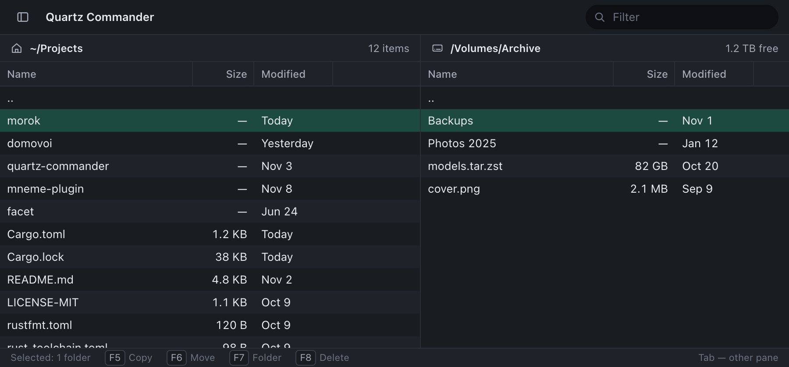
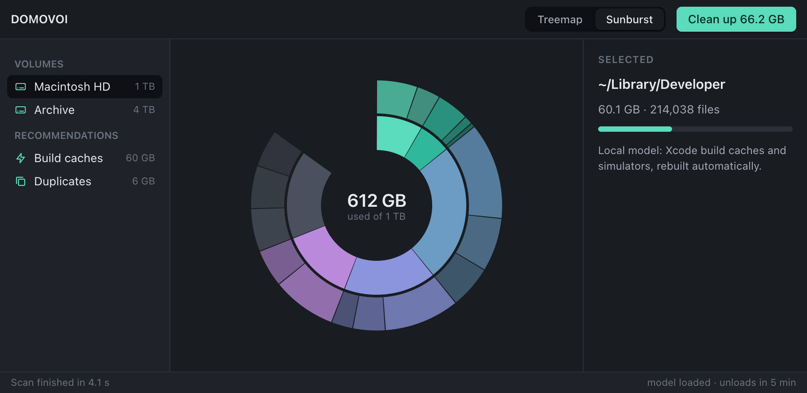
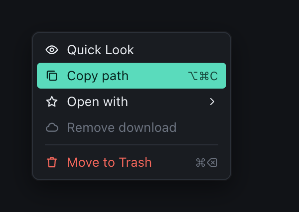
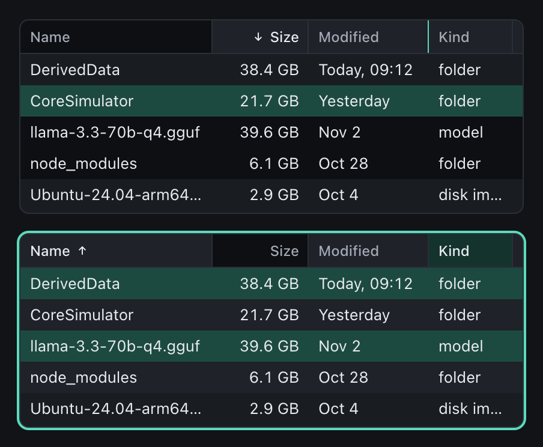
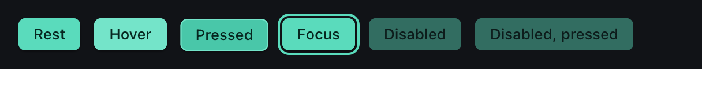
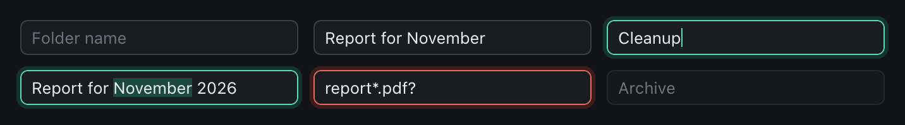

It looks like CSS.
There is no browser.
MOROK is a UI kit for macOS that draws the whole interface itself. You style windows with CSS compiled at build time and change them by writing signals.

A two-pane file manager built on the kitDrawn through Metal
The kit lays out, shapes text with Core Text and paints every pixel itself. No AppKit controls, no web view.
Styled by CSS
109 properties and 7 states, compiled into tables when the application builds. What it does not take, it refuses at the line.
Driven by signals
A component runs once. A signal that changes updates exactly what follows it.
Components, as the kit draws them.
Whole screens
A disk map with a sunburst drawn on a canvas, in the catalog beside the file manager above.

A disk map with a sunburst chartMenus and overlays
Menus, popovers, dialogs and sheets, each open while a signal holds.

A menu with icons and shortcutsTable — a million rows
Only the rows in view have elements, and a scroll allocates nothing.

A table with sortable columnsButtons
Pressed by a click, by Space and Return, by an assistive technology.

A primary button in each of its statesText fields
Core Text shapes the text; the kit lays out the lines and draws the glyphs.

A text field in each of its statesA component in Rust. Its look in CSS.
fn sign_in(mount: &mut Mount<'_>) -> ElementId {
let name = mount.runtime().signal(String::new());
let field = TextField::new(name).placeholder("Name").mount(mount);
let button = Button::new("Sign in").primary().mount(mount);
mount.element().class(CLASSES.form).child(field).child(button).id()
}
.form {
display: flex;
gap: var(--space-3);
padding: var(--space-4);
border-radius: var(--radius-md);
background-color: var(--color-surface);
}
What it is not.
- A web viewNo browser and no JavaScript.
- A wrapper of AppKitThe kit lays out, shapes text and paints itself.
- Cross-platformmacOS 26 on Apple Silicon.
- All of CSSA subset the compiler checks.
Start with one line.
morok = { git = "https://github.com/supostat/morok" }
macOS 26 or later on Apple Silicon · Rust 1.94 or later